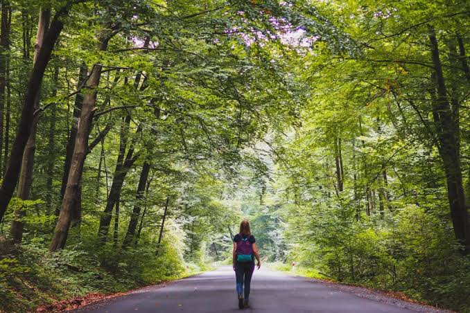
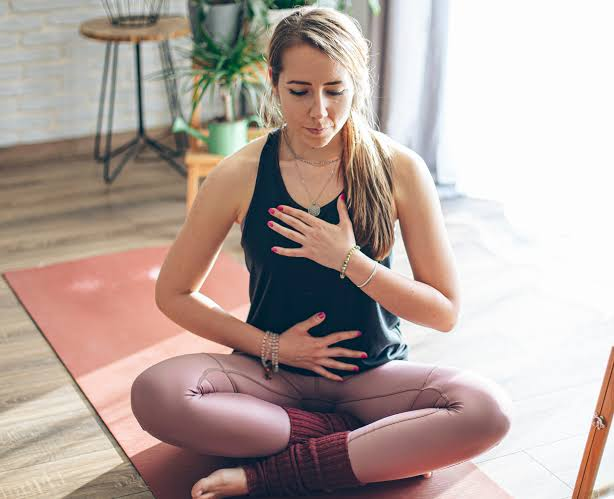
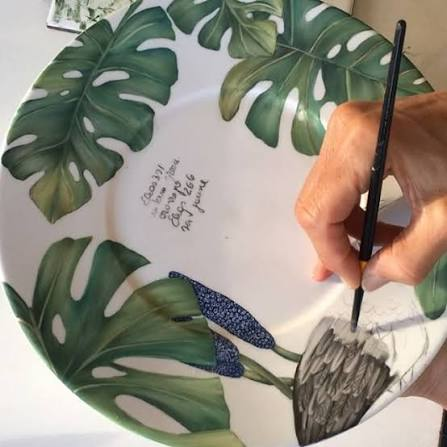

caminar 20 a 30 minutos al aire libre o en
áreas verdes alivia la tensión, despeja la mente y
reduce el agotamiento mental
correr, hacer senderismo o jugar en equipo
libera endorfinas, mejora el bienestar
emocional y cuida la salud física

dedicar breves pausas en casa para respirar
conscientemente o estirarse ayuda a calmar la ansiedad

trabajar con las manos fomenta la concentración, actúa como escape emocional y facilita la atención plena
anotar pensamientos o emociones aporta claridad mental y favorece la autorreflexión
escuchar canciones relajantes o tocar un instrumento ayuda a regular emociones y reducir la ansiedad
mantienen el cerebro activo, ejercitan la memoria y mejoran la atención.
compartir tiempo con familia, amistades o grupos fortalece la red de apoyo y combate la soledad. Puedes explorar ideas prácticas en PositivePsychology.com o en Colectivo Aquí y Ahora